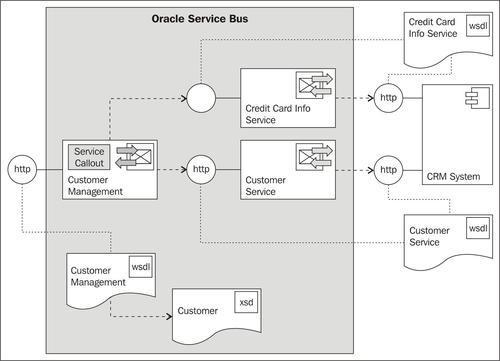
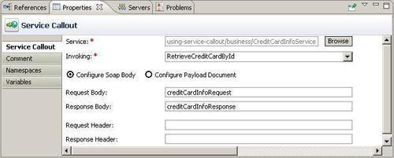
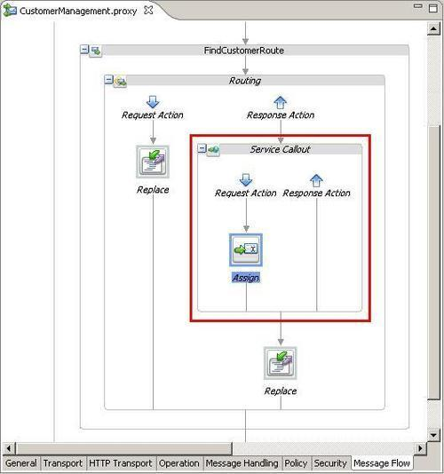
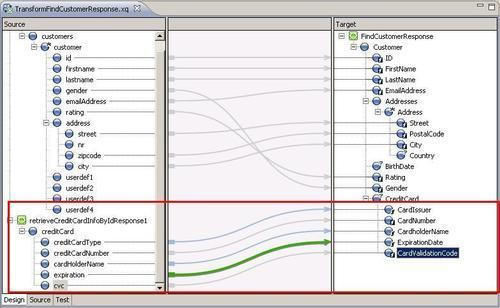
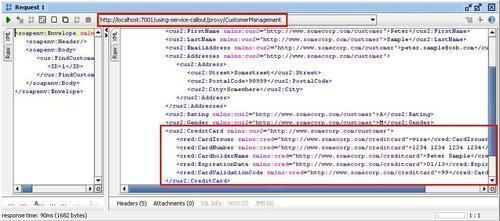

In this recipe, we will use a Service Callout action to call another service from a proxy service message flow.
We will use the sample setup from the first chapter of this book and add an additional service call to another service Credit Card Info Service, which returns the credit card information. The service call will be done using the Service Callout action. Both the information from the Credit Card Info Service and from the Customer Service will then be merged by the XQuery transformation into one single response returned by the proxy service.

You can import the OSB project containing the base setup for this recipe into Eclipse OEPE from \chapter-9\getting-ready\using-service-callout.
Start the soapUI mock services simulating the two external services on the CRM system by double-clicking on start-CreditCardInfoServiceCRM.cmd and start-CustomerServiceCRM.cmd in the \chapter-9\getting-ready\misc folder.
First, we will create a new business service which will wrap the additional Credit Card Info Service interface on the CRM system. In Eclipse OEPE, perform the following steps:
business folder and name it CreditCardInfoService. http://localhost:8090/mockCreditCardInfoServiceSOAP?WSDL into the URI field and click OK. mockCreditCardInfoServiceSOAP.wsdl to CreditCardInfoService.wsdl and move it into the wsdl folder.By doing that, we have created the new business service. Now, let's add the Service Callout action to the proxy service calling the new business service. In Eclipse OEPE, perform the following steps:
creditCardInfoRequest into the Request Body field and creditCardInfoResponse into the Response Body field.
<soap-env:Body>
<cred:RetrieveCreditCardById>
<id>{$body/cus:FindCustomer/ID/text()}</id>
</cred:RetrieveCreditCardById>
</soap-env:Body>
cred for the Prefix and http://www.crm.org/CreditCardInfoService/ for the URI field and click OK. creditCardInfoRequest into the Variable field.We have added the Service Callout action to the proxy service. The message flow should look as shown in the following screenshot:

The result of the Service Callout action is available in the creditCardInfoResponse variable. We now have to adapt the XQuery transformation to merge the message from the Service Callout and the Routing into one single response message. In Eclipse OEPE, perform the following steps:
(:: pragma bea:global-element-parameter parameter="$retrieveCreditCardInfoByIdResponse1" element="ns4:RetrieveCreditCardByIdResponse" location="../wsdl/CreditCardInfoService.wsdl" ::)
declare namespace ns4 = "http://www.crm.org/CreditCardInfoService/";
TransformFindCustomerResponse function:declare function xf:TransformFindCustomerResponse
($retrieveCustomerByCriteriaResponse1 as
element(ns0:RetrieveCustomerByCriteriaResponse),
$retrieveCreditCardInfoByIdResponse1 as
element(ns4:RetrieveCreditCardByIdResponse))
as element(ns3:FindCustomerResponse) {
<ns3:FindCustomerResponse>
declare variable $retrieveCreditCardInfoByIdResponse1 as element(ns4:RetrieveCreditCardByIdResponse) external; xf:TransformFindCustomerResponse( $retrieveCustomerByCriteriaResponse1, $retrieveCreditCardInfoByIdResponse1)

Last but not least we have to change the existing invoke of the XQuery in the Replace action so that the additional parameter is passed. In Eclipse OEPE, perform the following steps:
$body/ext:RetrieveCustomerByCriteriaResponse into the retrieveCustomerByCriteriaResponse1 field and $creditCardInfoResponse/cred: RetrieveCreditCardByIdResponse into the retrieveCreditCardInfoByIdResponse1 field.Now let's test the proxy service from soapUI:
CustomerManagement-soapui-project.xml from the \chapter-9\getting-ready\misc folder.
We have used the Service Callout action in this recipe to invoke an additional service besides the one already called through the Routing action. By doing that, we are able to, for example, enrich a message, either before or after doing the routing. In our case, we have added the credit card information to the canonical response message returned to the consumer. By adding the Service Callout action into the Response Action of the Routing action, we decided that the callout is done after the Routing has been successfully executed.
A Service Callout only works with WSDL operation which implements the request/response message exchange pattern. One-way operations cannot be invoked by the Service Callout action, use the Publish action instead.
In this recipe, we have seen the Service Callout in action. But what is the difference between a Service Callout and a Routing action?
A Routing action can only be used inside a Route node and will always have to be placed at the end of the proxy service message flow. No other actions can follow a routing node in the message flow. The Routing action will define where the request thread stops and where the response thread starts. The request and response pipeline of an OSB proxy service are always executed in two different threads. A Routing action supports both request/response as well as one-way message exchange patterns.
The Service Callout action can be placed anywhere where an OSB action is valid. There is no limit for the number of Service Callout actions which can be used. A Service Callout placed in the request pipeline will be performed by the request thread, a Service Callout in the response pipeline by the response thread. A Service Callout only supports the request/response message exchange pattern and will always be synchronous, that is, it waits for the response message.